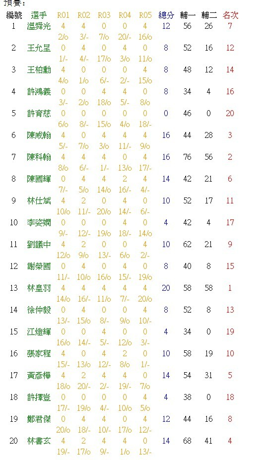
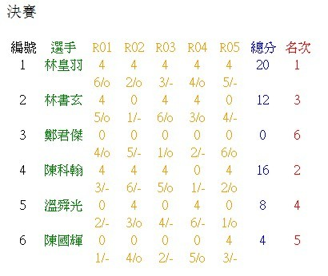

《第四屆台灣名人賽》
#1 《第四屆台灣名人賽》 作者：潇洒 发表时间：2012-12-9 13:43:54
比賽時間：預賽：2012年11月25日 上午9:00 (週日)
決賽：2012年12月1~2日 上午9:00 (週六日)
台灣名人賽：由參賽選手及公證人議定後公告
比賽地點：預賽：台北市信義路三段134巷82號2樓 （台北市建南區民活動中心）
決賽：嘉義市北港路73號 （真龍化境能量研究協會）
台灣名人賽：由參賽選手及公證人議定後公告
賽制：
預賽：五輪瑞士制，基本時限３０分鐘，加時每子１分鐘一次
預賽前六名獲得參加決賽資格，若有人棄權，依預賽名次遞補
決賽：五輪循環制，基本時限６０分鐘，加時每子１分鐘一次
決賽冠軍獲得挑戰名人資格，若名人頭銜保有者棄權，由決賽冠亞軍進行台灣名人賽
台灣名人賽：五番棋決賽，基本時限９０分鐘，加時每子１分鐘一次
由名人與決賽冠軍參賽，勝出者獲得名人頭銜，戰積相同由名人衛冕
若由決賽冠亞軍進行名人賽，戰積相同由決賽名次較高者獲得名人頭銜
當一方確定獲得名人頭銜後，不再進行剩餘的比賽


［此帖子已被 潇洒 在 2012-12-9 13:44:35 编辑过］
［此帖子已被 有志青年 在 2012-12-20 14:38:45 编辑过］
#2 Re:《第四屆台灣名人賽》 作者：刘琦林 发表时间：2012-12-9 13:55:06
看不大懂。。。#3 Re:《第四屆台灣名人賽》 作者：八了个卦 发表时间：2012-12-9 14:48:28
http://www.ljrenju.cn/news/tai2012/taimeijin4.htm这里还有棋谱#4 Re:《第四屆台灣名人賽》 作者：屏蔽 发表时间：2012-12-9 22:02:59
好神奇的一局4分？……#5 Re:《第四屆台灣名人賽》 作者：励精 发表时间：2012-12-20 14:27:29
转载自中华台北网站的新闻稿，请把民国年代改成公元年代。谢谢。［ 有志青年 于 2012-12-20 14:39:00 时花20金币送鲜花一朵］
#6 Re:刘琦林【==Re:《第四屆台灣名人賽》==】 作者：励精 发表时间：2012-12-20 16:10:44
名字后面4表示胜一局得4分（为了计算小分方便，可以不出现小数点），和各得2分，负得0分。
下一行数字是对手号，/o表示假先方开局，/-表示假后方。